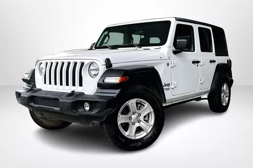

Por primera vez directo de fábrica Jeep Wrangler Rubicon incluye WARN® Winch con defensas de acero para ayudarte a salir de situaciones difíciles. Con una capacidad de 8,000 libras, este winch todoterreno tiene la capacidad de remolcar otros vehículos o sacarte del lodo
El Jeep Grand Cherokee proporciona más eficacia todoterreno, prestaciones aumentadas en ruta y mayor seguridad para los ocupantes